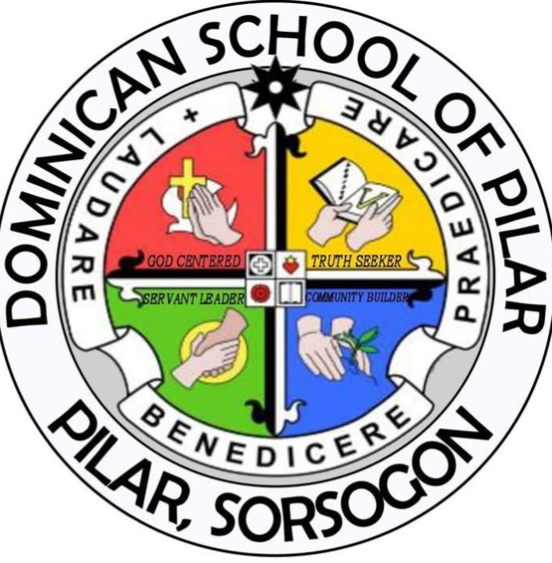

<!DOCTYPE html>
<head><title>MY WEBSITE</title></head>
<body>
<header>
 <!-- Logo -->
 
</body>
</html
<footer>
 <p>&copy;2025 Dominican School of Pilar, Inc All rights reserved.</p>
</footer
</header>
<hr>
<nav>
<table cellsacing="5" cellpadding="5">
<tr>
<td><a href="index.html">HOME</a></td>
<td><a href="about.html">About</a></td>

<td><a href="more.html">more</a></td>
</tr>
</table>
</nav>
<hr>
<h2>Wellcome to my website!</h2>
 
<p>
here we would talk about the
DSP GRADUATE ATTRIBUTES -
 "Guided by God's truth, we serve to lead and build community."  
</p>


<table cellsacing ="5" cellpadding ="5"></table>


<p2> The Four Graduate Attributes molds students to become better members of the church and the community. The Four Graduate Attributes are God Centered, Servant Leader, Community Builder and Truth seekers.</p2>

<table cellsacing ="10" cellpadding ="10"></table>
<p3> The purpose of this is to prioritize the needs of others and moral principles into their actions and decisions, to the well-being and development of their communities. And to understand with honesty and integrity.</p3>